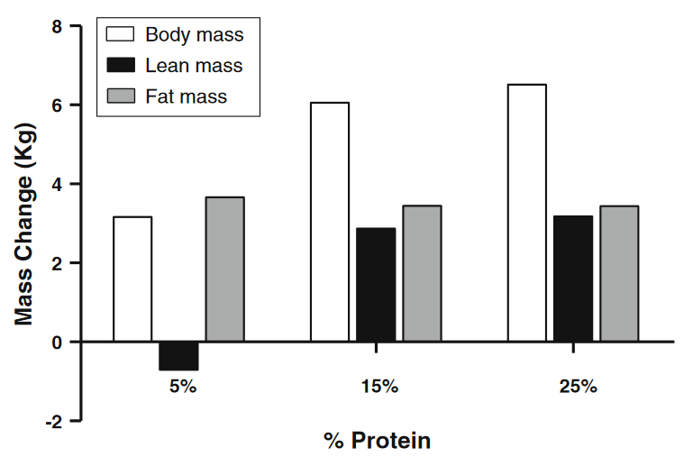

The Winning Product
So you've created your own store and are ready to sell
products or you are interested in starting a store but
still uncertain how to find the right products to sell.
Keep on reading to learn free valuable
information that other websites may cost hundreds of
dollars to explain to you the samething.
Follow Hot Trends But Don't Follow It
Sellers who catch onto a trend early on before it reaches
a climax will maximize their profit. Therefore, you must
realize the hot trends at the soonest time possible.
However, do not sell trending products
because you will compete with other reputable and/or large
companies where you have minimal chance in converting
views to sales. Instead, look for accessories or related
products that customers will most likely purchase as an
add-on to the trending product.
 Trend
Trend
The image is a screenshot of searches for "nintendo switch"
in blue and "Animal Crossing" in red from March to July of 2020.
Animal Crossing was a very popular game which was only available
on the Nintendo Switch. Notice how the trend of the game follows
the console? You would maximize your conversion rate if you
focused on selling related products rather than the trending
item itself. In other words, your conversion rate for related
products corresponds to the trending product, but you have
significantly less competitors which gives you more chance
to make a sale.
Muscle Gain During Fat Loss
Bodybuilders have traditionally followed the bulking-to-cutting phase
to transform their bodies. It has been believed by many for decades
that doing both simultaneously is hindering your progress. However,
new studies have proved that this is very well possible and in fact
it is more efficient in giving you the results you've always wanted.
Phase Busted
There are many people who still believe in the phasing method. You can't
blame them because the traditional method makes sense. The bulking phase
allows the body to put on as much mass as possible whether it is fat or
muscle. People increase protein and carbohydrate consumption
to provide the body with energy and nutrients to lift more in the gym
and activate protein synthesis for maximum muscle growth. Then, the
cutting phase is where people reduce calorie consumption to reach the
state of caloric defecit which is how the body loses mass. However, this
phase also loses muscle along with fat. The new method avoids the problems
present in the traditional method. You can actually lose fat while building
muscle. The key here is to increase protein consumption and still be
in a caloric defecit.
Graph
The graph shows stats of mass change for people in a caloric defecit. Shown
on the left is people who consume only 5% of their calories from protein
compared to 15% and 25%. We can conclude that protein synthesis occurs when
you consume at least 15% of calories from protein while still reducing fat
mass. The optimal percentage may be between 15% and 25% so stick to about
20% daily calories from protein.